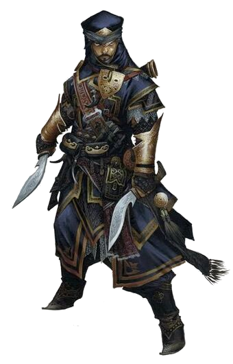
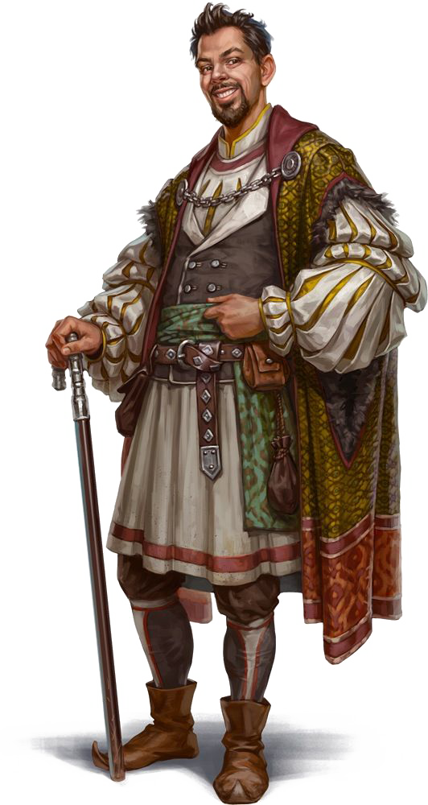
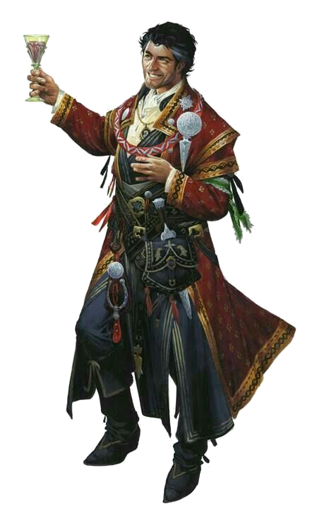
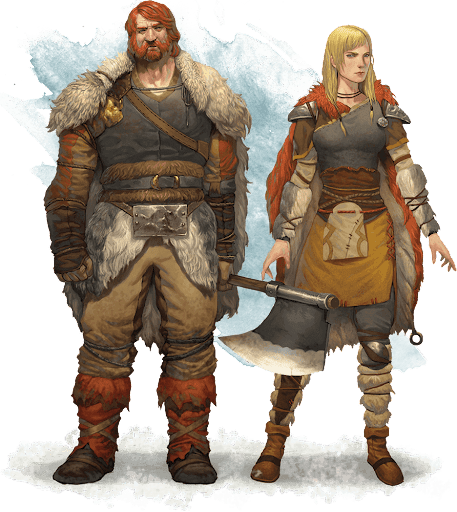
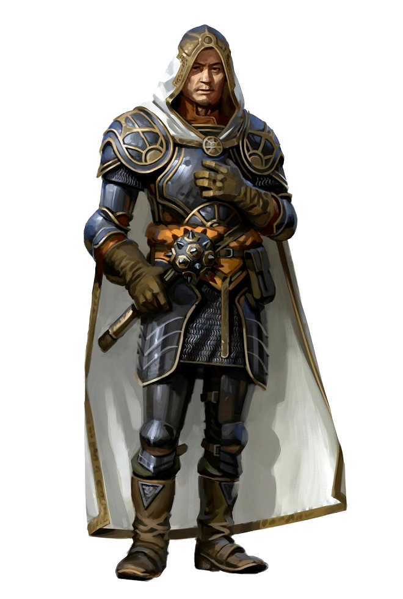
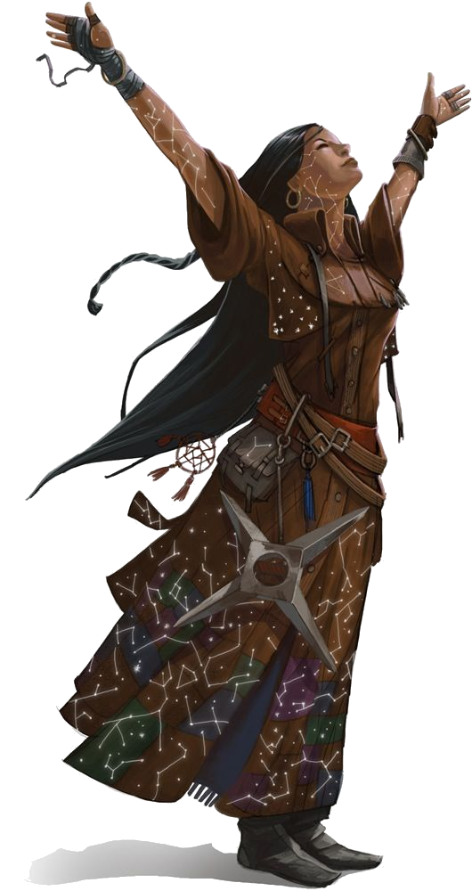
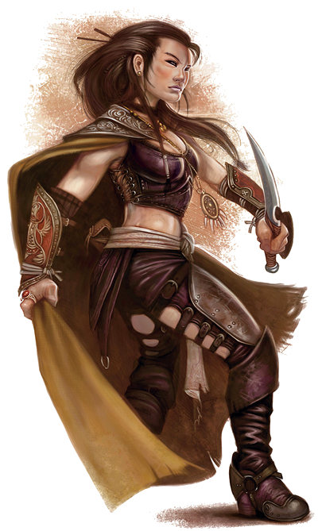
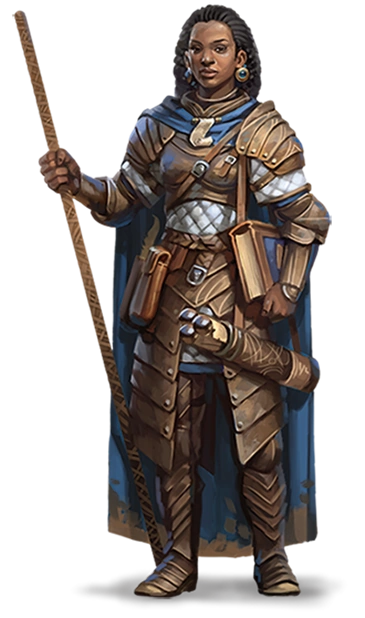
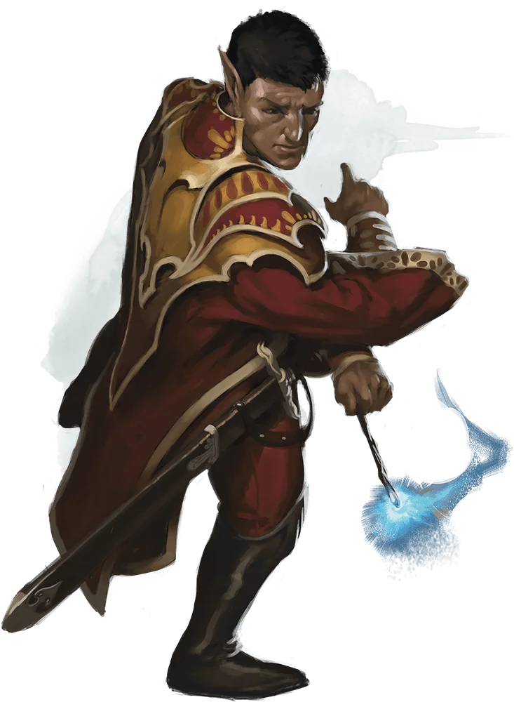

Humanos

Nos confins da maioria dos mundos, os humanos são a mais jovem das raças comuns, chegando mais tarde no cenário mundial e com uma vida curta, se comparados aos anões, elfos e dragões. Talvez seja por causa de suas vidas mais curtas que eles se esforcem para alcançar o máximo que podem nos anos que têm. Ou talvez eles sintam que têm algo a provar às raças mais antigas, e é por esta razão que eles constroem seus poderosos impérios através da conquista e do comércio. O que quer que os motive, os humanos são os inovadores, os realizadores e os pioneiros dos mundos.
Um Amplo Espectro
Com sua propensão para a migração e conquista, os humanos são fisicamente mais diversificados que as outras raças comuns. Não há um humano típico. Um indivíduo pode ter entre 1,65 metro a 1,90 metro de altura e pesar entre 62,5 kg e 125 kg. Os tons de pele podem variar do negro ao muito pálido, e os cabelos podem ir do negro ao loiro (encaracolado, crespo ou liso).
Homens podem possuir pelos faciais esparsos ou abundantes. A diversidade dos humanos pode ter uma pitada de sangue não humano, revelando indícios de elfos, orcs ou outras linhagens. Os humanos chegam à idade adulta no fim da adolescência e raramente vivem um século.
VARIADOS EM TUDO
Os humanos são os mais adaptáveis, flexíveis e ambiciosos entre todas as raças comuns. Eles têm amplos e distintos gostos, moralidades e hábitos nas muitas diferentes regiões onde eles se instalaram. Quando se estabelecem em um lugar, eles permanecem: eles constroem cidades que duram por eras, e grandes reinos que podem persistir por longos séculos. Um único humano pode ter uma vida relativamente curta, mas uma nação ou cultura humana preserva tradições com origens muito além do alcance da memória de qualquer um dos humanos. Eles vivem plenamente o presente – tornando-os bem adaptados a uma vida de aventuras – mas também planejam o futuro, esforçando-se para deixar um legado duradouro. Individualmente e como grupo, os humanos são oportunistas adaptáveis, e permanecem alerta às dinâmicas mudanças políticas e sociais.
Instituições Duradouras
Onde um único elfo ou anão pode assumir a responsabilidade de proteger um local especial ou um poderoso segredo, os humanos fundam ordens sagradas e instituições para tais fins. Enquanto clãs anões e anciões halflings passam as antigas tradições para cada nova geração, os templos, governos, bibliotecas, e códigos de lei dos humanos fixam suas tradições no alicerce da história.
Os humanos sonham com a imortalidade, mas (exceto aqueles poucos que procuram a não-vida ou a ascensão divina para escapar das garras da morte) somente alcançam-na certificando-se que serão lembrados depois que partirem.
Embora alguns humanos possam ser xenófobos, em geral suas sociedades são inclusivas. As terras humanas dão as boas-vindas a um grande número de raças não humanas em comparação com a proporção de humanos que vivem em terras não humanas.
Exemplo de Ambição
Os humanos que buscam aventura são os mais ousados e ambiciosos membros de uma ousada e ambiciosa raça.
Eles buscam ganhar glória aos olhos de seus companheiros ao acumular poder, riqueza e fama. Mais do que as outras raças, os humanos defendem causas, em vez de territórios ou grupos.
Nome e Etnias Humanas
Possuindo muito mais diversidade do que outras culturas, os humanos como um todo não possuem nomes típicos.
Alguns pais humanos dão nomes de outras línguas aos seus filhos, como nomes anões ou élficos (pronunciando-os mais ou menos corretamente), mas a maioria dos pais humanos dá nomes que estão ligados a cultura da sua região ou os nomes tradicionais de seus antepassados.
A cultura material e as características físicas dos humanos podem mudar muito de região para região. Nos Reinos Esquecidos, por exemplo, o vestuário, a arquitetura, a culinária, a música e a literatura dos humanos são diferentes nas terras do noroeste das Fronteiras Prateadas, daqueles da distante Turmish ou Impiltur, ao leste – e até mesmo mais distintas na longínqua Kara-Tur. As características físicas dos humanos, no entanto, variam de acordo com as antigas migrações dos primeiros humanos, de modo que os humanos das Fronteiras Prateadas possuem todas as variações possíveis de coloração de pele e características.
Nos Reinos Esquecidos, nove grupos étnicos humanos são amplamente reconhecidos, apesar de mais de uma dúzia de outros serem encontrados em áreas mais específicas de Faerûn. Esses grupos, e os nomes típicos de seus membros, podem ser usados como inspiração independente de qual mundo seu humano faz parte.
Calishita
Mais baixos e de constituição mais leve do que a maioria dos outros humanos, os Calishitas possuem pele, cabelos e olhos marrons escuros. Eles são encontrados principalmente no sudoeste Faerûn.
Nomes Calishitas. (Masculino) Aseir, Bardeid, Haseid, Khemed, Mehmen, Sudeiman, Zasheir. (Femininos) Atala, Ceidil, Hama, Jasmal, Meilil, Seipora, Yasheira, Zasheida. (Sobrenomes) Basha, Dumein, Jassan, Khalid, Mostana, Pashar, Rein
Chondathano
Chondathanos são um povo delgado, de pele morena e com cabelos castanhos que variam do quase loiro ao quase negro. A maioria deles é alta e possuem os olhos verdes ou castanhos, mas esses traços são quase universais. Humanos de descendência Chondathana dominam as terras centrais de Faerûn, em torno do Mar Interior.
Nomes Chondathanos. (Masculinos) Darvin, Dorn, Evendur, Gorstag, Grim, Helm, Malark, Morn, Randal, Stedd. (Femininos) Arveene, Esvele, Jhessail, Kerri, Lureene, Miri, Rowan, Shandri, Tessele. (Sobrenomes) Amblecrown, Buckman, Dundragon, Evenwood, Greycastle, Tallstag
Damarano
Encontrados principalmente no noroeste de Faerûn, os Damaranos são de altura e constituição mediana, com tons de pele que vão desde o moreno ao claro. Seu cabelo é geralmente castanho ou negro, e seus olhos são muito variáveis, embora o castanho seja o mais comum.
Nomes Damaranos. (Masculinos) Bor, Fodel, Glar, Grigor, Igan, Ivor, Kosef, Mival, Orel, Pavel, Sergor. (Femininos) Alethra, Kara, Katernin, Mara, Natali, Olma, Tana, Zora. (Sobrenomes) Bersk, Chernin, Dotsk, Kulenov, Marsk, Nemetsk, Shemov, Starag
Illuskano
Illuskanos são um povo alto, de pele clara com olhos azuis ou cinzentos como o aço. A maioria tem cabelos negros como um corvo, mas aqueles que habitam o extremo noroeste possuem cabelos loiros, ruivos ou castanho claros.
Nomes Illuskanos. (Masculinos) Ander, Blath, Bran, Frath, Geth, Lander, Luth, Malcer, Stor, Taman, Urth. (Femininos) Amafrey, Betha, Cefrey, Kethra, Mara, Olga, Silifrey, Westra. (Sobrenomes) Brightwood, Helder, Hornraven, Lackman, Stormwind, Windrivver
Mulano
Dominantes nas costas leste e sudeste do Mar Interior, os Mulanos são geralmente altos, magros, e com pele morena clara, com olhos amendoados ou castanhos. Seus cabelos variam do negro ao castanho escuro, mas nas terras onde eles são mais proeminentes, seus nobres e muitos outros Mulanos costumam raspar todo o cabelo.
Nomes Mulanos. (Masculinos) Aoth, Bareris, Ehput-Ki, Kethoth, Mumed, Ramas, So-Kehur, Thazar-De, Urhur. (Femininos) Arizima, Chathi, Nephis, Nulara, Murithi, Sefris, Thola, Umara, Zolis. (Sobrenomes) Ankhalab, Anskuld, Fezim, Hahpet, Nathandem, Sepret, Uuthrakt
Rashemita
Encontrados, na maioria das vezes, ao leste do Mar Interior e muitas vezes misturados com os Mulanos, os Rashemitas tendem a ser baixos, robustos e musculosos. Eles geralmente têm pele e olhos escuros, e cabelos negros.
Nomes Rachemitas. (Masculinos) Borivik, Faurgar, Jandar, Kanithar, Madislak, Ralmevik, Shaumar, Vladislak. (Femininos) Fyevarra, Hulmarra, Immith, Imzel, Navarra, Shevarra, Tammith, Yuldra. (Sobrenomes) Chergoba, Dyernina, Iltazyara, Murnyethara, Stayanoga, Ulmokina
Shou
Os Shou são o grupo étnico mais numeroso e poderoso de Kara-Tur, bem ao leste de Faerûn. Eles são de cor de um bronze amarelada, com cabelos negros e olhos escuros. Os sobrenomes dos Shou são geralmente apresentados antes do próprio nome.
Nomes Shou. (Masculinos) An, Chen, Chi, Fai, Jiang, Jun, Lian, Long, Meng, On, Shan, Shui, Wen. (Femininos) Bai, Chao, Jia, Lei, Mei, Qiao, Shui, Tai. (Sobrenomes) Chien, Huang, Kao, Kung, Lao, Ling, Mei, Pin, Shin, Sum, Tan, Wan
Tethyriano
Espalhados ao longo de toda a Costa da Espada na borda oeste de Faerûn, os Tethyrianos são de estatura e peso medianos, com pele escura, e aqueles que habitam as terras mais ao norte, tendem a ser mais altos. A cor de seus cabelos e olhos varia muito, mas os cabelos castanhos e os olhos azuis são os mais comuns.
Tethyrianos usam principalmente nomes Chondathanos.
Turami
Nativos da costa sul do Mar Interior, o povo Turami é geralmente alto e musculoso, com pele escura como o mogno, cabelos negros encaracolados e olhos escuros.
Nomes Turami. (Masculinos) Anton, Diero, Marcon, Pieron, Rimardo, Romero, Salazar, Umbero. (Femininos) Balama, Dona, Faila, Jalana, Luisa, Marta, Quara, Selise, Vonda. (Sobrenomes) Agosto, Astorio, Calabra, Domine, Falone, Marivaldi, Pisacar, Ramondo.
Traços Raciais dos Humanos
É difícil fazer generalizações sobre os humanos, mas seu humano possui as seguintes características.
Aumento no Valor de Habilidade. Todos os seus valores de habilidade aumentam em 1.
Idade. Os humanos chegam à idade adulta no final da adolescência e vivem menos de um século.
Tendência. Os humanos não possuem inclinação a nenhuma tendência em especial. Os melhores e os piores são encontrados entre eles.
Tamanho. Os humanos variam muito em altura e peso, podem ter quase 1,50 metro ou mais de 1,80 metro. Independentemente da sua posição entre esses valores, o seu tamanho é Médio.
Deslocamento. Seu deslocamento base de caminhada é 9 metros.
Idiomas. Você pode falar, ler e escrever Comum e outro idioma adicional, à sua escolha. Os humanos normalmente aprendem os idiomas dos povos que convivem, incluindo dialetos obscuros. Eles gostam de rechear seu discurso com palavras emprestadas de outras línguas: xingamentos orcs, expressões musicais élficas, frases militares anãs e outros.
| Traços Raciais Alternativos |
|---|
| Se sua campanha usa regras opcionais de talentos, seu mestre pode permitir que você utilize os traços raciais alternativos que substituem as características Aumento no valor de Habilidades e Perícias. |
| Aumento no Valor de Habilidade. Dois valores de habilidade, à sua escolha, aumentam em 1. |
| Perícia. Você ganha proficiência em uma perícia, à sua escolha. |
| Talento. Você adquire um talento de sua escolha. |